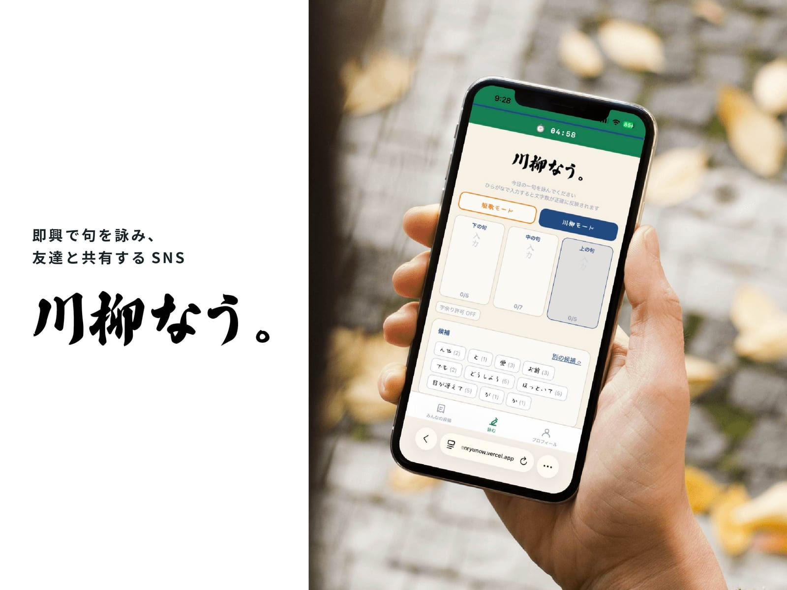
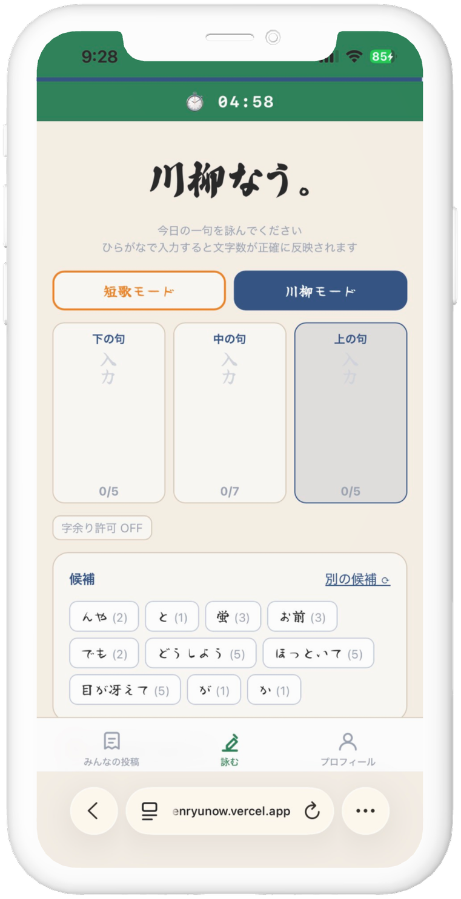
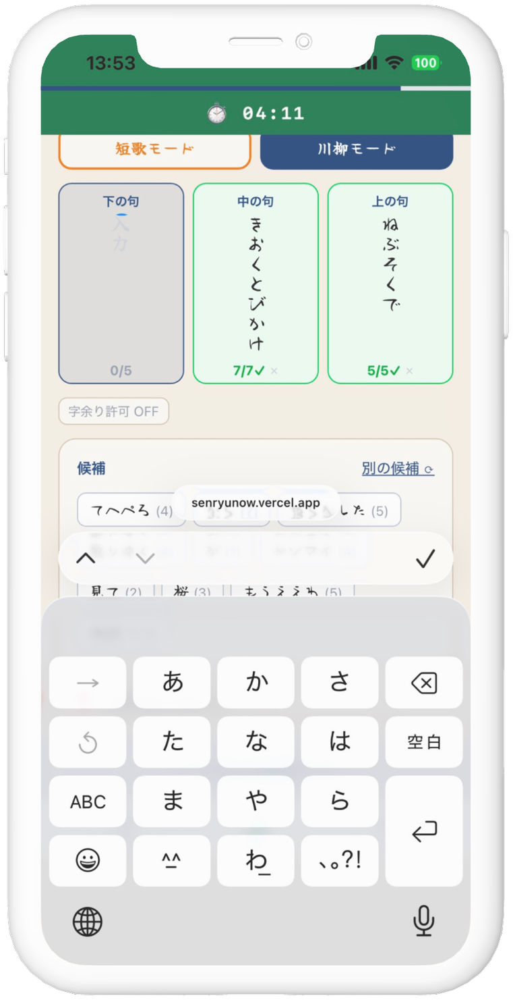
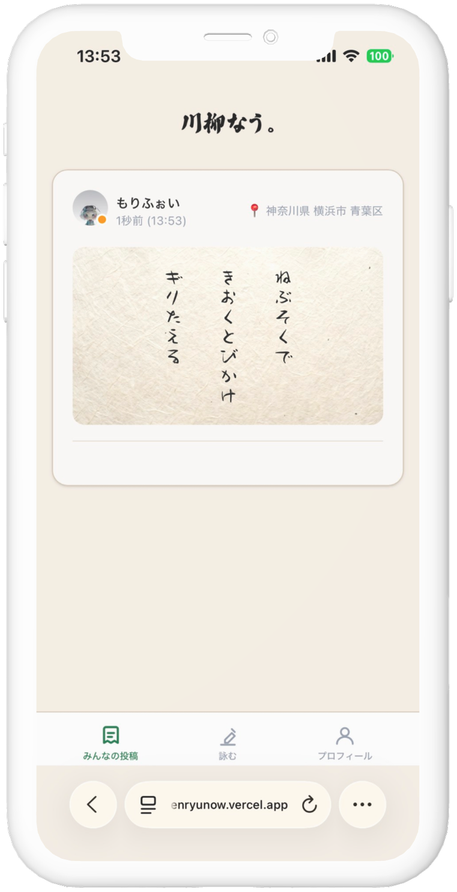
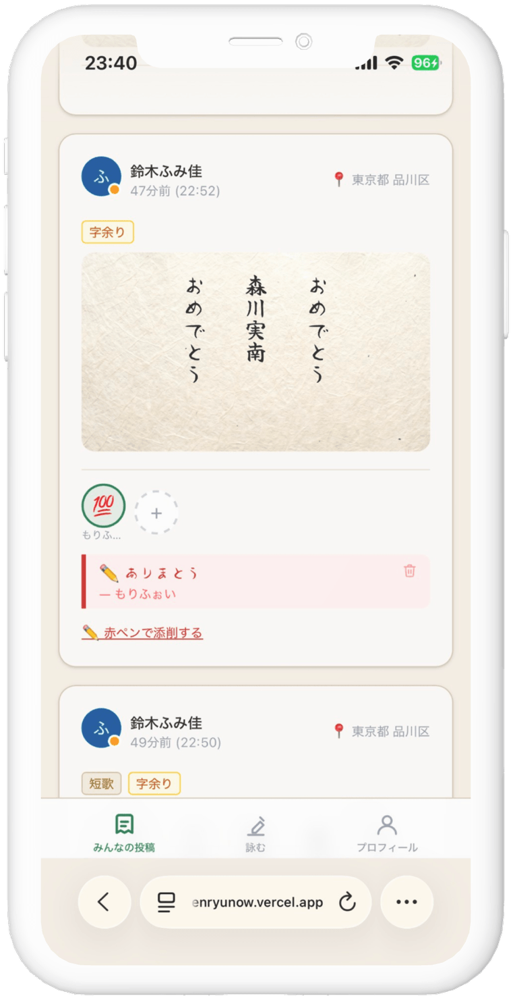
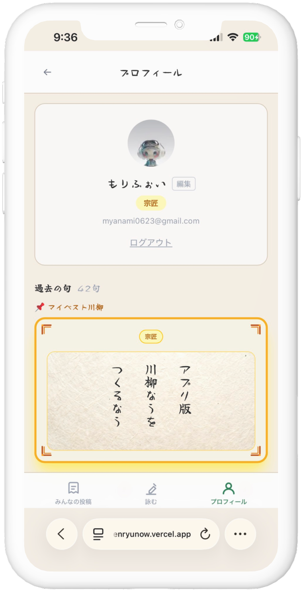
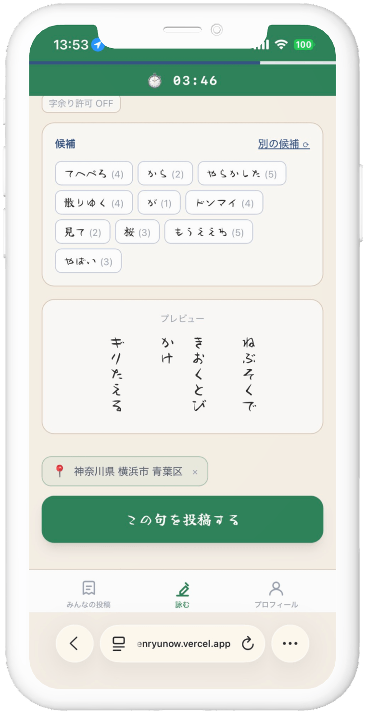
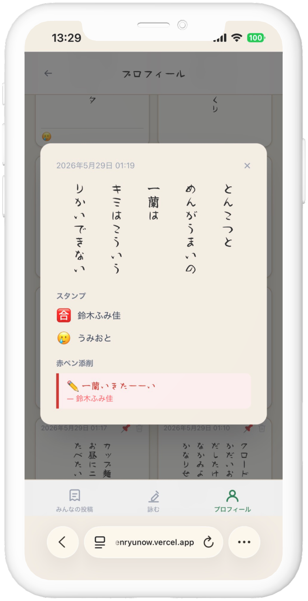

川柳なう。
即興で句を詠み、友達と共有するSNS

01Overview — 写真ではなく、言葉で日常を共有する。
「川柳なう。」は、いま感じたことを五・七・五のひと句にして投稿するSNSです。 写真や長文ではなく、17音という制約のなかで気分を表現することで、 飾らない・盛らない、ゆるやかなコミュニケーションが生まれます。
02Project Info
- 担当
- 企画・UIデザイン・実装(個人開発)
- ツール
- 製作期間
- 2日(2026.5.27〜5.28)
- メンバー
- 1人
- 製作形態
- 個人開発(自主制作)
03Background — 制作のきっかけ
写真共有アプリ「BeReal」での情報漏洩・炎上が相次ぐ
2026年春、BeRealを通じた個人情報の流出が相次ぎ、大きな話題になった。「友達限定だから安全」という前提が、実は簡単に崩れてしまう仕組みだったことに気づいた。
友達の一言「川柳って、昔の即興ラップバトルみたいなものだよな」
実際、川柳は江戸時代の「前句付け」という、お題に即興で句を付ける遊びがルーツ。即興で言葉を投げ合うという構造は、たしかにラップバトルに近いものがある。
炎上リスクのないBeRealのようなものがあればいいな
↓
それなら、写真ではなく川柳を即興で詠ませよう!
04How it works — 詠んで、届ける。
ランダムな時間に届く通知から、投稿、リアクションまでの流れです。




05Design — こだわったところ
言葉が主役のサービスなので、UIは余白と文字組みを最優先に設計しました。 コンセプトは「写真ではなく限られた言葉で日常を共有する、新しいSNS」。
ロゴ
継続を促す工夫 — 5段階ランクシステム
投稿を続けることで、5段階のランクが上昇していく仕組みを導入。 継続率の向上だけでなく、アプリ全体の世界観にも一貫性を持たせています。 最高ランクは「宗匠」。

UIのこだわり
ヘッダーの時間制限
スクロールしても残り時間が分かるよう固定。投稿までのカウントダウンを常に視認できるようにした。
縦書き表示
川柳は縦書きで読むものなので、本来の読み心地を、そのままアプリへ。筆文字フォントと組み合わせ、和の世界観を視覚的に表現。短歌モード(5句構成)でも自然に収まる設計に。

ワードの候補表示
時間やアイデアがない時も、ランダムな組み合わせで一句完成。意味のない言葉の並びも、思わぬ面白さを生むことがある。
位置情報の表示
選択制で位置情報を共有することが可能に。「どこで詠んだか」が見えることで、一句の背景が浮かび上がる。
リアクション
友達の投稿にスタンプやコメントを送ることができる。「コメント」ではなく、「赤ペンで添削」という表現により、川柳なう。の世界観を崩さない設計に。
06Gallery
